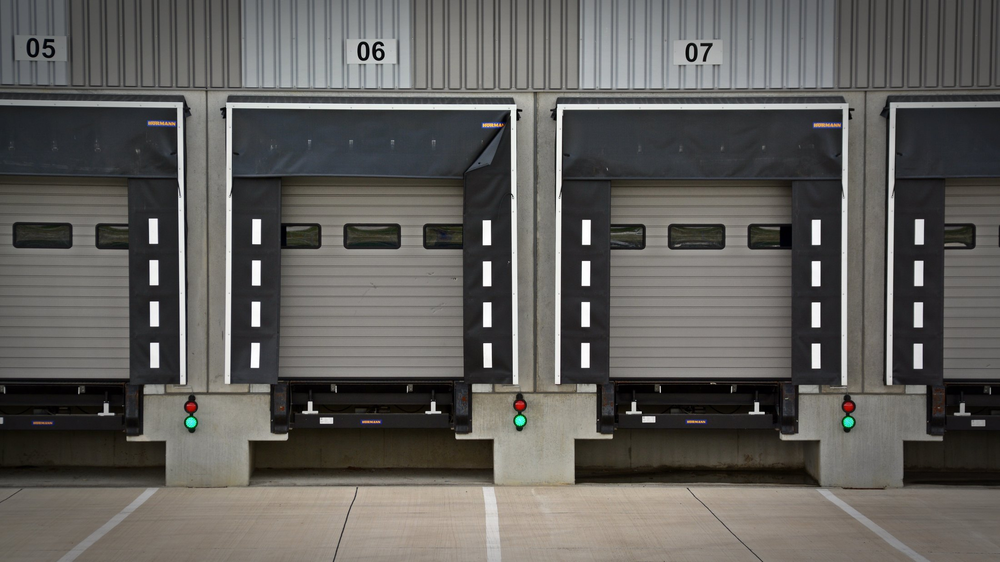
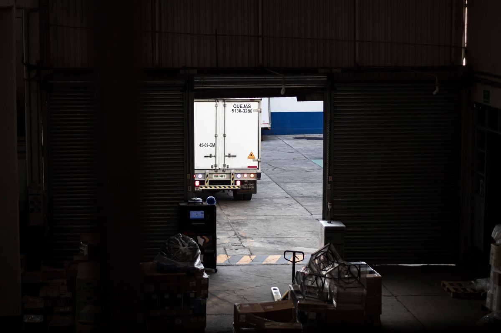
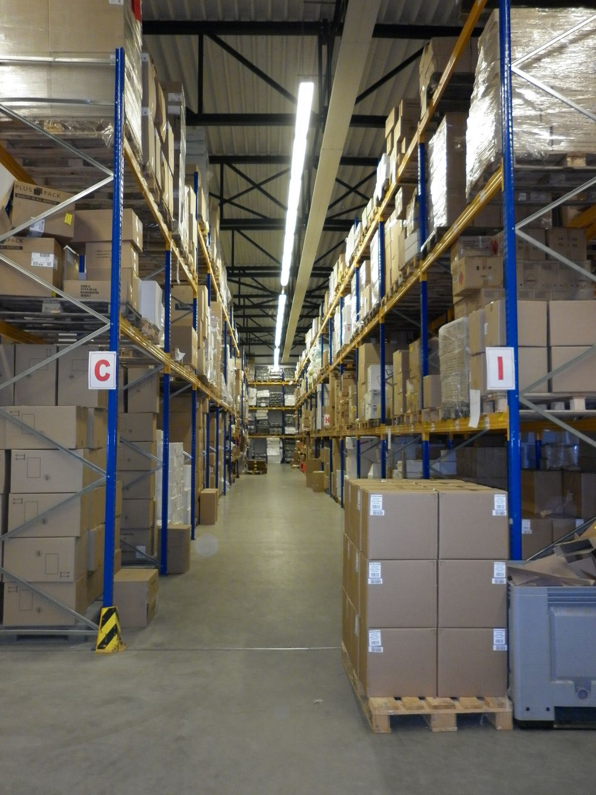

Cubo
Para vaso.
El formato de siempre. Se derrite lento porque tiene poca superficie para su volumen, así que el trago no se agua tan rápido. Es el que rinde en barra.
Freire · Región de La Araucanía
Hielo para restaurantes, botillerías y eventos. Porque un local que abre sin hielo tiene un problema que no se arregla a las once de la mañana.
01 — Lo que nadie explica cuando cotiza
Casi todos los locales piden «hielo» a secas y reciben lo que haya. Pero cada formato sirve para una cosa distinta, y usar el equivocado cuesta plata todos los días: se derrite antes, agua el trago o se pega en la vitrina.
Para vaso.
El formato de siempre. Se derrite lento porque tiene poca superficie para su volumen, así que el trago no se agua tan rápido. Es el que rinde en barra.
Para vitrina y pescadería.
Plano y delgado. Se acomoda alrededor del producto sin dejar huecos y enfría por contacto. Es el de las vitrinas de mariscos y el de conservar cortes. En un vaso no sirve: se derrite en minutos.
Para coctelería y jugos. Enfría rápido justamente porque se derrite rápido — esa es la gracia y también el límite: se pide para el momento, no para el día.
Para conservar.
La masa grande es la que más dura. Se usa para mantener frío durante horas sin electricidad: un evento en el campo, un cooler grande, un traslado.
Los formatos que Hielos Queulat produce de verdad, los tamaños de bolsa y los precios los define el negocio: esta sección explica para qué sirve cada tipo, no promete que los tengan todos. Es lo primero que hay que completar antes de publicar.
Un restaurante no compra hielo.
Compra no quedarse sin hielo.
02 — Cómo encargar
01
Tipo de hielo y kilos o bolsas. Si no sabe cuánto, dígalo: se estima con el tamaño del local y los días de más venta.
02
El dato más importante de todos. No es lo mismo «el jueves» que «el jueves antes de las once». Un local que abre a mediodía necesita el hielo antes, no durante.
03
Dirección exacta y quién recibe. Si hay que entrar por atrás o hay una hora en que no hay nadie, eso se dice al encargar y no cuando el camión ya está afuera.
04
El hielo llega bien y se arruina en el local si no hay dónde ponerlo. Conviene tener el congelador o el cooler despejado antes de que llegue.
Si es un evento: encargue con anticipación y calcule de más. Sobra hielo, o falta a la mitad de la fiesta; no hay término medio.

Trece reseñas en Google
Las trece con cinco estrellas.
03 — A quién le vendemos
Lista de ejemplo de los clientes habituales de una fábrica de hielo. A quién le venden de verdad, con qué frecuencia y hasta dónde reparten lo confirma el negocio.
04 — El producto


05 — Contacto
Para eventos, avise con anticipación: el volumen grande se produce, no se saca del congelador.
Para el dueño de Hielos Queulat
Ahí está la diferencia con casi cualquier otro negocio de la zona. Un restaurante nuevo, una botillería que cambia de dueño o alguien que organiza un matrimonio busca proveedores por escrito, compara, y necesita algo que mostrarle al socio o al jefe.
Un teléfono suelto en una ficha de Google no sirve para eso. Una página con los formatos, la zona de reparto y cómo se encarga sí — y encima trabaja de noche, que es cuando el dueño de un local se sienta a resolver estas cosas.